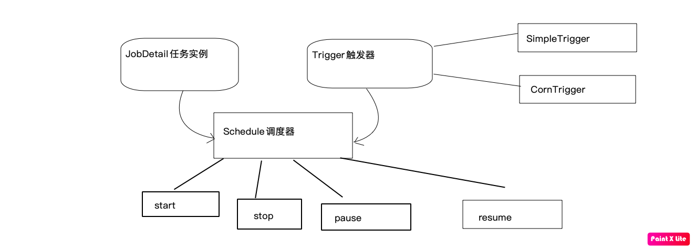

<!DOCTYPE html>
<html lang=zh>
<head>
  <meta charset="utf-8">
  
  <meta http-equiv="X-UA-Compatible" content="IE=edge,chrome=1">
  <meta name="viewport" content="width=device-width, initial-scale=1, maximum-scale=1, minimum-scale=1, user-scalable=no, minimal-ui">
  <meta name="renderer" content="webkit">
  <meta http-equiv="Cache-Control" content="no-transform" />
  <meta http-equiv="Cache-Control" content="no-siteapp" />
  <meta name="apple-mobile-web-app-capable" content="yes">
  <meta name="apple-mobile-web-app-status-bar-style" content="black">
  <meta name="format-detection" content="telephone=no,email=no,adress=no">
  <!-- Color theme for statusbar -->
  <meta name="theme-color" content="#000000" />
  <!-- 强制页面在当前窗口以独立页面显示,防止别人在框架里调用页面 -->
  <meta http-equiv="window-target" content="_top" />
  
  
  <title>Quartz定时任务调度学习 | Hexo</title>
  <meta name="description" content="Quartz 任务调度一、概念介绍1.任务类 Job    Job 就是你想要实现的任务类，每一个必须实现 org.quartz.job 接口，并且只需实现接口定义的 execute()方法2.触发器 Trigger    用来定时，设置什么时间执行任务3.调度器 Schdule    将 Job 和 Trigger 整合起来负责基于 Trigger 设定的时间来执行 Job4.任务实例JobDe">
<meta property="og:type" content="article">
<meta property="og:title" content="Quartz定时任务调度学习">
<meta property="og:url" content="http://example.com/2021/01/06/Quartz%E5%AE%9A%E6%97%B6%E4%BB%BB%E5%8A%A1%E8%B0%83%E5%BA%A6%E5%AD%A6%E4%B9%A0/index.html">
<meta property="og:site_name" content="Hexo">
<meta property="og:description" content="Quartz 任务调度一、概念介绍1.任务类 Job    Job 就是你想要实现的任务类，每一个必须实现 org.quartz.job 接口，并且只需实现接口定义的 execute()方法2.触发器 Trigger    用来定时，设置什么时间执行任务3.调度器 Schdule    将 Job 和 Trigger 整合起来负责基于 Trigger 设定的时间来执行 Job4.任务实例JobDe">
<meta property="og:locale" content="zh_CN">
<meta property="og:image" content="http://example.com/2021/01/06/Quartz%E5%AE%9A%E6%97%B6%E4%BB%BB%E5%8A%A1%E8%B0%83%E5%BA%A6%E5%AD%A6%E4%B9%A0/Quartz.png">
<meta property="article:published_time" content="2021-01-06T07:32:29.000Z">
<meta property="article:modified_time" content="2021-01-07T06:31:06.208Z">
<meta property="article:author" content="John Doe">
<meta name="twitter:card" content="summary">
<meta name="twitter:image" content="http://example.com/2021/01/06/Quartz%E5%AE%9A%E6%97%B6%E4%BB%BB%E5%8A%A1%E8%B0%83%E5%BA%A6%E5%AD%A6%E4%B9%A0/Quartz.png">
  <!-- Canonical links -->
  <link rel="canonical" href="http://example.com/2021/01/06/Quartz%E5%AE%9A%E6%97%B6%E4%BB%BB%E5%8A%A1%E8%B0%83%E5%BA%A6%E5%AD%A6%E4%B9%A0/index.html">
  
    <link rel="alternate" href="/atom.xml" title="Hexo" type="application/atom+xml">
  
  
    <link rel="icon" href="/favicon.png" type="image/x-icon">
  
  
<link rel="stylesheet" href="/css/style.css">

  
  
  
  
<meta name="generator" content="Hexo 5.2.0"></head>


<body class="main-center" itemscope itemtype="http://schema.org/WebPage">
  <header class="header" itemscope itemtype="http://schema.org/WPHeader">
  <div class="slimContent">
    <div class="navbar-header">
      
      
      <div class="profile-block text-center">
        <a id="avatar" href="https://github.com/cofess" target="_blank">
          
        </a>
        <h2 id="name" class="hidden-xs hidden-sm">卖猪的艾木</h2>
        <h3 id="title" class="hidden-xs hidden-sm hidden-md">黑客与画家</h3>
        <small id="location" class="text-muted hidden-xs hidden-sm"><i class="icon icon-map-marker"></i> Weihai,Shandong China</small>
      </div>
      
      <div class="search" id="search-form-wrap">

    <form class="search-form sidebar-form">
        <div class="input-group">
            <input type="text" class="search-form-input form-control" placeholder="搜索" />
            <span class="input-group-btn">
                <button type="submit" class="search-form-submit btn btn-flat" onclick="return false;"><i class="icon icon-search"></i></button>
            </span>
        </div>
    </form>
    <div class="ins-search">
  <div class="ins-search-mask"></div>
  <div class="ins-search-container">
    <div class="ins-input-wrapper">
      <input type="text" class="ins-search-input" placeholder="想要查找什么..." x-webkit-speech />
      <button type="button" class="close ins-close ins-selectable" data-dismiss="modal" aria-label="Close"><span aria-hidden="true">×</span></button>
    </div>
    <div class="ins-section-wrapper">
      <div class="ins-section-container"></div>
    </div>
  </div>
</div>


</div>
      <button class="navbar-toggle collapsed" type="button" data-toggle="collapse" data-target="#main-navbar" aria-controls="main-navbar" aria-expanded="false">
        <span class="sr-only">Toggle navigation</span>
        <span class="icon-bar"></span>
        <span class="icon-bar"></span>
        <span class="icon-bar"></span>
      </button>
    </div>
    <nav id="main-navbar" class="collapse navbar-collapse" itemscope itemtype="http://schema.org/SiteNavigationElement" role="navigation">
      <ul class="nav navbar-nav main-nav ">
        
        
        <li class="menu-item menu-item-home">
          <a href="/.">
            
            <i class="icon icon-home-fill"></i>
            
            <span class="menu-title">首页</span>
          </a>
        </li>
        
        
        <li class="menu-item menu-item-archives">
          <a href="/archives">
            
            <i class="icon icon-archives-fill"></i>
            
            <span class="menu-title">归档</span>
          </a>
        </li>
        
        
        <li class="menu-item menu-item-categories">
          <a href="/categories">
            
            <i class="icon icon-folder"></i>
            
            <span class="menu-title">分类</span>
          </a>
        </li>
        
        
        <li class="menu-item menu-item-tags">
          <a href="/tags">
            
            <i class="icon icon-tags"></i>
            
            <span class="menu-title">标签</span>
          </a>
        </li>
        
        
        <li class="menu-item menu-item-repository">
          <a href="/repository">
            
            <i class="icon icon-project"></i>
            
            <span class="menu-title">项目</span>
          </a>
        </li>
        
        
        <li class="menu-item menu-item-books">
          <a href="/books">
            
            <i class="icon icon-book-fill"></i>
            
            <span class="menu-title">书单</span>
          </a>
        </li>
        
        
        <li class="menu-item menu-item-links">
          <a href="/links">
            
            <i class="icon icon-friendship"></i>
            
            <span class="menu-title">友链</span>
          </a>
        </li>
        
        
        <li class="menu-item menu-item-about">
          <a href="/about">
            
            <i class="icon icon-cup-fill"></i>
            
            <span class="menu-title">关于</span>
          </a>
        </li>
        
      </ul>
      
	
    <ul class="social-links">
    	
        <li><a href="https://github.com/cofess" target="_blank" title="Github" data-toggle=tooltip data-placement=top><i class="icon icon-github"></i></a></li>
        
        <li><a href="http://weibo.com/cofess" target="_blank" title="Weibo" data-toggle=tooltip data-placement=top><i class="icon icon-weibo"></i></a></li>
        
        <li><a href="https://twitter.com/iwebued" target="_blank" title="Twitter" data-toggle=tooltip data-placement=top><i class="icon icon-twitter"></i></a></li>
        
        <li><a href="https://www.behance.net/cofess" target="_blank" title="Behance" data-toggle=tooltip data-placement=top><i class="icon icon-behance"></i></a></li>
        
        <li><a href="/atom.xml" target="_blank" title="Rss" data-toggle=tooltip data-placement=top><i class="icon icon-rss"></i></a></li>
        
    </ul>

    </nav>
  </div>
</header>

  
    <aside class="sidebar" itemscope itemtype="http://schema.org/WPSideBar">
  <div class="slimContent">
    
      <div class="widget">
    <h3 class="widget-title">公告</h3>
    <div class="widget-body">
        <div id="board">
            <div class="content">
                <p>欢迎交流与分享经验!</p>
            </div>
        </div>
    </div>
</div>

    
      

    
      

    
      
    
      
  <div class="widget">
    <h3 class="widget-title">归档</h3>
    <div class="widget-body">
      <ul class="archive-list"><li class="archive-list-item"><a class="archive-list-link" href="/archives/2021/01/">一月 2021</a><span class="archive-list-count">7</span></li><li class="archive-list-item"><a class="archive-list-link" href="/archives/2020/12/">十二月 2020</a><span class="archive-list-count">6</span></li><li class="archive-list-item"><a class="archive-list-link" href="/archives/2020/11/">十一月 2020</a><span class="archive-list-count">2</span></li><li class="archive-list-item"><a class="archive-list-link" href="/archives/2020/10/">十月 2020</a><span class="archive-list-count">21</span></li></ul>
    </div>
  </div>


    
      
  <div class="widget">
    <h3 class="widget-title">最新文章</h3>
    <div class="widget-body">
      <ul class="recent-post-list list-unstyled no-thumbnail">
        
          <li>
            
            <div class="item-inner">
              <p class="item-category">
                
              </p>
              <p class="item-title">
                <a href="/2021/01/20/%E5%89%8D%E7%AB%AF%E7%BB%84%E4%BB%B6%E5%8C%96%E6%A1%86%E6%9E%B6Vue%E5%AD%A6%E4%B9%A0/" class="title">前端组件化框架Vue学习</a>
              </p>
              <p class="item-date">
                <time datetime="2021-01-20T09:32:46.000Z" itemprop="datePublished">2021-01-20</time>
              </p>
            </div>
          </li>
          
          <li>
            
            <div class="item-inner">
              <p class="item-category">
                
              </p>
              <p class="item-title">
                <a href="/2021/01/20/%E5%89%8D%E7%AB%AF%E4%B8%89%E5%A4%A7%E7%BB%84%E4%BB%B6%E4%B9%8BJavaScript%E5%AD%A6%E4%B9%A0/" class="title">前端三大组件之JavaScript学习</a>
              </p>
              <p class="item-date">
                <time datetime="2021-01-20T09:32:15.000Z" itemprop="datePublished">2021-01-20</time>
              </p>
            </div>
          </li>
          
          <li>
            
            <div class="item-inner">
              <p class="item-category">
                
              </p>
              <p class="item-title">
                <a href="/2021/01/20/%E5%89%8D%E7%AB%AF%E4%B8%89%E5%A4%A7%E7%BB%84%E4%BB%B6%E4%B9%8BHtml5-Css3%E5%AD%A6%E4%B9%A0/" class="title">前端三大组件之Html5+Css3学习</a>
              </p>
              <p class="item-date">
                <time datetime="2021-01-20T09:31:48.000Z" itemprop="datePublished">2021-01-20</time>
              </p>
            </div>
          </li>
          
          <li>
            
            <div class="item-inner">
              <p class="item-category">
                
              </p>
              <p class="item-title">
                <a href="/2021/01/11/Oauth2%E5%BC%80%E5%8F%91%E6%A0%87%E5%87%86%E5%AD%A6%E4%B9%A0/" class="title">Oauth2开发标准学习</a>
              </p>
              <p class="item-date">
                <time datetime="2021-01-11T09:01:04.000Z" itemprop="datePublished">2021-01-11</time>
              </p>
            </div>
          </li>
          
          <li>
            
            <div class="item-inner">
              <p class="item-category">
                
              </p>
              <p class="item-title">
                <a href="/2021/01/07/Spring-Security%E6%A1%86%E6%9E%B6%E5%AD%A6%E4%B9%A0/" class="title">Spring Security框架学习</a>
              </p>
              <p class="item-date">
                <time datetime="2021-01-07T06:38:11.000Z" itemprop="datePublished">2021-01-07</time>
              </p>
            </div>
          </li>
          
      </ul>
    </div>
  </div>
  

    
  </div>
</aside>

  
  
<main class="main" role="main">
  <div class="content">
  <article id="post-Quartz定时任务调度学习" class="article article-type-post" itemscope itemtype="http://schema.org/BlogPosting">
    
    <div class="article-header">
      
        
  
    <h1 class="article-title" itemprop="name">
      Quartz定时任务调度学习
    </h1>
  

      
      <div class="article-meta">
        <span class="article-date">
    <i class="icon icon-calendar-check"></i>
	<a href="/2021/01/06/Quartz%E5%AE%9A%E6%97%B6%E4%BB%BB%E5%8A%A1%E8%B0%83%E5%BA%A6%E5%AD%A6%E4%B9%A0/" class="article-date">
	  <time datetime="2021-01-06T07:32:29.000Z" itemprop="datePublished">2021-01-06</time>
	</a>
</span>
        
        

        

        <span class="post-comment"><i class="icon icon-comment"></i> <a href="/2021/01/06/Quartz%E5%AE%9A%E6%97%B6%E4%BB%BB%E5%8A%A1%E8%B0%83%E5%BA%A6%E5%AD%A6%E4%B9%A0/#comments" class="article-comment-link">评论</a></span>
        
      </div>
    </div>
    <div class="article-entry marked-body" itemprop="articleBody">
      
        <h1 id="Quartz-任务调度"><a href="#Quartz-任务调度" class="headerlink" title="Quartz 任务调度"></a>Quartz 任务调度</h1><h2 id="一、概念介绍"><a href="#一、概念介绍" class="headerlink" title="一、概念介绍"></a>一、概念介绍</h2><p>1.任务类 Job<br>    Job 就是你想要实现的任务类，每一个必须实现 org.quartz.job 接口，并且只需实现接口定义的 execute()方法<br>2.触发器 Trigger<br>    用来定时，设置什么时间执行任务<br>3.调度器 Schdule<br>    将 Job 和 Trigger 整合起来负责基于 Trigger 设定的时间来执行 Job<br>4.任务实例JobDetail<br>    JobDetail 表示一个具体的可执行的调度程序，Job 是这个可执行程调度程序所要执行的内容，另外 JobDetail 还包含了这个任务调度的方案和策略。</p>
<p>5.原理图：</p>
<h2 id="二、API-介绍"><a href="#二、API-介绍" class="headerlink" title="二、API 介绍"></a>二、API 介绍</h2><ul>
<li>Scheduler - 与调度程序交互的主要API。</li>
<li>Job - 你想要调度器执行的任务组件需要实现的接口</li>
<li>JobDetail - 用于定义作业的实例。</li>
<li>Trigger（即触发器） - 定义执行给定作业的计划的组件。</li>
<li>JobBuilder - 用于定义/构建 JobDetail 实例，用于定义作业的实例。</li>
<li>TriggerBuilder - 用于定义/构建触发器实例。</li>
</ul>
<p>简单实例：</p>
<blockquote>
<p>Job实例类</p>
</blockquote>
<figure class="highlight java"><table><tr><td class="gutter"><pre><span class="line">1</span><br><span class="line">2</span><br><span class="line">3</span><br><span class="line">4</span><br><span class="line">5</span><br><span class="line">6</span><br><span class="line">7</span><br><span class="line">8</span><br><span class="line">9</span><br><span class="line">10</span><br><span class="line">11</span><br><span class="line">12</span><br><span class="line">13</span><br><span class="line">14</span><br><span class="line">15</span><br><span class="line">16</span><br><span class="line">17</span><br></pre></td><td class="code"><pre><span class="line"><span class="keyword">public</span> <span class="class"><span class="keyword">class</span> <span class="title">HelloJob</span> <span class="keyword">implements</span> <span class="title">Job</span> </span>&#123;</span><br><span class="line"></span><br><span class="line">    <span class="comment">/**</span></span><br><span class="line"><span class="comment">     * 工作执行方法</span></span><br><span class="line"><span class="comment">     * <span class="doctag">@param</span> jobExecutionContext</span></span><br><span class="line"><span class="comment">     * <span class="doctag">@throws</span> JobExecutionException</span></span><br><span class="line"><span class="comment">     */</span></span><br><span class="line">    <span class="meta">@Override</span></span><br><span class="line">    <span class="function"><span class="keyword">public</span> <span class="keyword">void</span> <span class="title">execute</span><span class="params">(JobExecutionContext jobExecutionContext)</span> <span class="keyword">throws</span> JobExecutionException </span>&#123;</span><br><span class="line">        Date date = <span class="keyword">new</span> Date();</span><br><span class="line">        SimpleDateFormat simpleDateFormat = <span class="keyword">new</span> SimpleDateFormat(<span class="string">&quot;yyyy-MM-dd HH:mm:ss&quot;</span>);</span><br><span class="line">        String formatDate = simpleDateFormat.format(date);</span><br><span class="line">        <span class="comment">//打印工作。。</span></span><br><span class="line">        System.out.println(<span class="string">&quot;当前正在数据库备份，时间为&quot;</span> + formatDate);</span><br><span class="line">    &#125;</span><br><span class="line">&#125;</span><br><span class="line"></span><br></pre></td></tr></table></figure>

<blockquote>
<p>测试类 首先说明一下：</p>
<p>JobDetail jobDetail = newJob(HelloJob.class) 其实是JobDetail jobDetail =  JobBuilder.newJob(HelloJob.class)，这样写也可以通过原因是静态导入的结果，这样可以导入静态方法，变量等。</p>
<figure class="highlight java"><table><tr><td class="gutter"><pre><span class="line">1</span><br><span class="line">2</span><br><span class="line">3</span><br></pre></td><td class="code"><pre><span class="line"><span class="keyword">import</span> <span class="keyword">static</span> org.quartz.JobBuilder.newJob;</span><br><span class="line"><span class="keyword">import</span> <span class="keyword">static</span> org.quartz.SimpleScheduleBuilder.simpleSchedule;</span><br><span class="line"><span class="keyword">import</span> <span class="keyword">static</span> org.quartz.TriggerBuilder.newTrigger;</span><br></pre></td></tr></table></figure>
</blockquote>
<figure class="highlight java"><table><tr><td class="gutter"><pre><span class="line">1</span><br><span class="line">2</span><br><span class="line">3</span><br><span class="line">4</span><br><span class="line">5</span><br><span class="line">6</span><br><span class="line">7</span><br><span class="line">8</span><br><span class="line">9</span><br><span class="line">10</span><br><span class="line">11</span><br><span class="line">12</span><br><span class="line">13</span><br><span class="line">14</span><br><span class="line">15</span><br><span class="line">16</span><br><span class="line">17</span><br><span class="line">18</span><br><span class="line">19</span><br><span class="line">20</span><br><span class="line">21</span><br></pre></td><td class="code"><pre><span class="line"><span class="keyword">public</span> <span class="class"><span class="keyword">class</span> <span class="title">QuartzTest01</span> </span>&#123;</span><br><span class="line">    <span class="function"><span class="keyword">public</span> <span class="keyword">static</span> <span class="keyword">void</span> <span class="title">main</span><span class="params">(String[] args)</span> <span class="keyword">throws</span> SchedulerException </span>&#123;</span><br><span class="line">        <span class="comment">//1.schedule调度器</span></span><br><span class="line">        Scheduler scheduler = StdSchedulerFactory.getDefaultScheduler();</span><br><span class="line">        <span class="comment">//2.JobDetail任务实例</span></span><br><span class="line">        JobDetail jobDetail = newJob(HelloJob.class)</span><br><span class="line">                .withIdentity(<span class="string">&quot;name1&quot;</span>)<span class="comment">//参数1：任务的名称（唯一实例）参数2：任务组名称</span></span><br><span class="line">                .usingJobData(<span class="string">&quot;message&quot;</span>,<span class="string">&quot;111&quot;</span>)</span><br><span class="line">                .build();</span><br><span class="line">        <span class="comment">//3.trigger触发器</span></span><br><span class="line">        Trigger trigger = newTrigger()</span><br><span class="line">                .withIdentity(<span class="string">&quot;name1&quot;</span>, <span class="string">&quot;grouo1&quot;</span>)<span class="comment">//参数1：触发器的名称（唯一实例）参数2：触发器组名称</span></span><br><span class="line">                .startNow()<span class="comment">//立即执行</span></span><br><span class="line">                .withSchedule(simpleSchedule().repeatSecondlyForever(<span class="number">5</span>))<span class="comment">//每5s执行一次</span></span><br><span class="line">                .usingJobData(<span class="string">&quot;message&quot;</span>,<span class="string">&quot;2222&quot;</span>)</span><br><span class="line">                .build();</span><br><span class="line">      	<span class="comment">//绑定触发器和任务实例</span></span><br><span class="line">        scheduler.scheduleJob(jobDetail,trigger);</span><br><span class="line">        scheduler.start();</span><br><span class="line">    &#125;</span><br><span class="line">&#125;</span><br></pre></td></tr></table></figure>

<blockquote>
<p>三大组件：调度器、任务实例、触发器。由原理图可以看出调度器把任务实例和触发器绑定在一起，一旦触发器条件满足，就触发任务开始工作，对HelloJob进行实例</p>
</blockquote>
<h2 id="三、Job-与-JobDetail"><a href="#三、Job-与-JobDetail" class="headerlink" title="三、Job 与 JobDetail"></a>三、Job 与 JobDetail</h2><p><strong>Job</strong>:工作任务调度的接口，任务类需要实现该接口。接口中的 excute()方法类似于 JDK 提供的 TimeTask 中的 run()方法，在里面编写业务逻辑。job 的生命周期:<strong>每次调度 job 执行 excute()方法前都会创建一个新的 job 实例</strong>，调用完成后会被释放，被回收。</p>
<figure class="highlight java"><table><tr><td class="gutter"><pre><span class="line">1</span><br><span class="line">2</span><br><span class="line">3</span><br><span class="line">4</span><br></pre></td><td class="code"><pre><span class="line"><span class="meta">@Override</span></span><br><span class="line"><span class="function"><span class="keyword">public</span> <span class="keyword">void</span> <span class="title">execute</span><span class="params">(JobExecutionContext jobExecutionContext)</span> <span class="keyword">throws</span> JobExecutionException </span>&#123;</span><br><span class="line">   <span class="comment">//...</span></span><br><span class="line"> &#125;</span><br></pre></td></tr></table></figure>

<p><strong>JobDetail</strong>:为 job 实例提供许多可设置的属性，以及 JobDataMap 成员变量属性，它用来存储特定 Job 实例的状态信息</p>
<figure class="highlight java"><table><tr><td class="gutter"><pre><span class="line">1</span><br><span class="line">2</span><br><span class="line">3</span><br><span class="line">4</span><br></pre></td><td class="code"><pre><span class="line">JobDetail jobDetail = newJob(HelloJob.class)</span><br><span class="line">                .withIdentity(<span class="string">&quot;name1&quot;</span>,<span class="string">&quot;group1&quot;</span>)<span class="comment">//参数1：任务的名称（唯一实例）必须设置 参数2：任务组名称,不设置默认DEFAULT</span></span><br><span class="line">                .usingJobData(<span class="string">&quot;message&quot;</span>,<span class="string">&quot;111&quot;</span>)<span class="comment">//JobDataMap参数设置key，value</span></span><br><span class="line">                .build();<span class="comment">//使用的是Builder构建</span></span><br></pre></td></tr></table></figure>


<h2 id="四、JobExecutionContext-和-JobDataMap"><a href="#四、JobExecutionContext-和-JobDataMap" class="headerlink" title="四、JobExecutionContext 和 JobDataMap"></a>四、JobExecutionContext 和 JobDataMap</h2><p>Context 中包含了许多 JobDetail 和 Trigger 的状态信息，它是 Quartz 运行环境以及 Job 本身的明细数据</p>
<blockquote>
<p>HelloJob进一步修改。。主要输出Context中的内容</p>
</blockquote>
<figure class="highlight java"><table><tr><td class="gutter"><pre><span class="line">1</span><br><span class="line">2</span><br><span class="line">3</span><br><span class="line">4</span><br><span class="line">5</span><br><span class="line">6</span><br><span class="line">7</span><br><span class="line">8</span><br><span class="line">9</span><br><span class="line">10</span><br><span class="line">11</span><br><span class="line">12</span><br><span class="line">13</span><br><span class="line">14</span><br><span class="line">15</span><br><span class="line">16</span><br><span class="line">17</span><br><span class="line">18</span><br><span class="line">19</span><br><span class="line">20</span><br><span class="line">21</span><br><span class="line">22</span><br><span class="line">23</span><br><span class="line">24</span><br><span class="line">25</span><br><span class="line">26</span><br><span class="line">27</span><br><span class="line">28</span><br><span class="line">29</span><br><span class="line">30</span><br></pre></td><td class="code"><pre><span class="line"><span class="keyword">public</span> <span class="class"><span class="keyword">class</span> <span class="title">HelloJob</span> <span class="keyword">implements</span> <span class="title">Job</span> </span>&#123;</span><br><span class="line"></span><br><span class="line">    <span class="keyword">private</span> String message;</span><br><span class="line"></span><br><span class="line">    <span class="function"><span class="keyword">public</span> <span class="keyword">void</span> <span class="title">setMessage</span><span class="params">(String message)</span> </span>&#123;</span><br><span class="line">        <span class="keyword">this</span>.message = message;</span><br><span class="line">    &#125;</span><br><span class="line"></span><br><span class="line">    <span class="comment">/**</span></span><br><span class="line"><span class="comment">     * 工作执行方法</span></span><br><span class="line"><span class="comment">     * <span class="doctag">@param</span> jobExecutionContext</span></span><br><span class="line"><span class="comment">     * <span class="doctag">@throws</span> JobExecutionException</span></span><br><span class="line"><span class="comment">     */</span></span><br><span class="line">    <span class="meta">@Override</span></span><br><span class="line">    <span class="function"><span class="keyword">public</span> <span class="keyword">void</span> <span class="title">execute</span><span class="params">(JobExecutionContext jobExecutionContext)</span> <span class="keyword">throws</span> JobExecutionException </span>&#123;</span><br><span class="line">        Date date = <span class="keyword">new</span> Date();</span><br><span class="line">        SimpleDateFormat simpleDateFormat = <span class="keyword">new</span> SimpleDateFormat(<span class="string">&quot;yyyy-MM-dd HH:mm:ss&quot;</span>);</span><br><span class="line">        String formatDate = simpleDateFormat.format(date);</span><br><span class="line">        JobKey jobKey = jobExecutionContext.getJobDetail().getKey();<span class="comment">//context里的JobDetail任务实例里的内容</span></span><br><span class="line">        System.out.println(jobKey.getName() + jobKey.getGroup() + jobExecutionContext.getJobDetail().getJobClass().getName());<span class="comment">//name1 group1 cn.aimu.maizhu.job.HelloJob</span></span><br><span class="line">        System.out.println(jobExecutionContext.getJobDetail().getJobClass().getSimpleName());<span class="comment">//HelloJob</span></span><br><span class="line">        System.out.println(jobExecutionContext.getJobDetail().getJobDataMap().get(<span class="string">&quot;message&quot;</span>));<span class="comment">//111</span></span><br><span class="line">        System.out.println(jobExecutionContext.getTrigger().getJobDataMap().get(<span class="string">&quot;message&quot;</span>));<span class="comment">//2222</span></span><br><span class="line">        System.out.println(simpleDateFormat.format(jobExecutionContext.getFireTime()));<span class="comment">//当前工作时间</span></span><br><span class="line">        System.out.println(simpleDateFormat.format(jobExecutionContext.getNextFireTime()));<span class="comment">//下一次工作时间</span></span><br><span class="line">        System.out.println(<span class="string">&quot;参数值为：&quot;</span> + message);<span class="comment">//和JobDataMap有关，输出为2222</span></span><br><span class="line">        <span class="comment">//打印工作。。</span></span><br><span class="line">        System.out.println(<span class="string">&quot;当前正在数据库备份，时间为&quot;</span> + formatDate);</span><br><span class="line">    &#125;</span><br><span class="line">&#125;</span><br></pre></td></tr></table></figure>

<p>JobDataMap 一看就知道实现了 Map 接口，是用来存储数据的，非常方便使用 usingJobData()设置 Key 和 Value 即可。Job 实现类中添加 setter 方法对应 JobDataMap 的键值，初始化时会自动调用这些 setter 方法</p>
<blockquote>
<p>上面HelloJob定义的message和setter方法就是Job实例时会初始化调用setter，如果jobdetail和trigger中的key相同，那么trigger会覆盖jobdetail中的，如上message输出2222。</p>
</blockquote>
<h2 id="五、有状态-Job-和无状态-Job"><a href="#五、有状态-Job-和无状态-Job" class="headerlink" title="五、有状态 Job 和无状态 Job"></a>五、有状态 Job 和无状态 Job</h2><p>有状态是指每次运行 Job 之间会保持一些状态，这些状态存储在 JobDataMap 中；而无状态是指每一次调用都会创建一个新的 JobDataMap。加注解@PersistJobDataAfterExecute</p>
<blockquote>
<p>我们改一下测试类的JobDetail中的JobDataMap参数为count，0</p>
</blockquote>
<figure class="highlight java"><table><tr><td class="gutter"><pre><span class="line">1</span><br><span class="line">2</span><br><span class="line">3</span><br><span class="line">4</span><br><span class="line">5</span><br></pre></td><td class="code"><pre><span class="line"><span class="comment">//2.JobDetail任务实例</span></span><br><span class="line">        JobDetail jobDetail = newJob(HelloJob.class)</span><br><span class="line">                .withIdentity(<span class="string">&quot;name1&quot;</span>)<span class="comment">//参数1：任务的名称（唯一实例）参数2：任务组名称</span></span><br><span class="line">                .usingJobData(<span class="string">&quot;count&quot;</span>,<span class="number">0</span>)</span><br><span class="line">                .build();</span><br></pre></td></tr></table></figure>

<blockquote>
<p>使用setter方法获取count的值，记住trigger中不要设置count的key，不然就会被覆盖，而且trigger没有状态，我们要用的是Job的实例，所有要改JobDetail，而不是Trigger。</p>
</blockquote>
<figure class="highlight java"><table><tr><td class="gutter"><pre><span class="line">1</span><br><span class="line">2</span><br><span class="line">3</span><br><span class="line">4</span><br><span class="line">5</span><br><span class="line">6</span><br><span class="line">7</span><br><span class="line">8</span><br><span class="line">9</span><br><span class="line">10</span><br><span class="line">11</span><br><span class="line">12</span><br><span class="line">13</span><br><span class="line">14</span><br><span class="line">15</span><br><span class="line">16</span><br><span class="line">17</span><br><span class="line">18</span><br><span class="line">19</span><br><span class="line">20</span><br><span class="line">21</span><br><span class="line">22</span><br><span class="line">23</span><br><span class="line">24</span><br></pre></td><td class="code"><pre><span class="line"><span class="keyword">public</span> <span class="class"><span class="keyword">class</span> <span class="title">HelloJob</span> <span class="keyword">implements</span> <span class="title">Job</span> </span>&#123;</span><br><span class="line">		<span class="keyword">private</span> Integer count;</span><br><span class="line"></span><br><span class="line">    <span class="function"><span class="keyword">public</span> <span class="keyword">void</span> <span class="title">setCount</span><span class="params">(Integer count)</span> </span>&#123;</span><br><span class="line">        <span class="keyword">this</span>.count = count;</span><br><span class="line">    &#125;</span><br><span class="line"></span><br><span class="line">    <span class="comment">/**</span></span><br><span class="line"><span class="comment">     * 工作执行方法</span></span><br><span class="line"><span class="comment">     * <span class="doctag">@param</span> jobExecutionContext</span></span><br><span class="line"><span class="comment">     * <span class="doctag">@throws</span> JobExecutionException</span></span><br><span class="line"><span class="comment">     */</span></span><br><span class="line">    <span class="meta">@Override</span></span><br><span class="line">    <span class="function"><span class="keyword">public</span> <span class="keyword">void</span> <span class="title">execute</span><span class="params">(JobExecutionContext jobExecutionContext)</span> <span class="keyword">throws</span> JobExecutionException </span>&#123;</span><br><span class="line">        Date date = <span class="keyword">new</span> Date();</span><br><span class="line">        SimpleDateFormat simpleDateFormat = <span class="keyword">new</span> SimpleDateFormat(<span class="string">&quot;yyyy-MM-dd HH:mm:ss&quot;</span>);</span><br><span class="line">        String formatDate = simpleDateFormat.format(date);</span><br><span class="line">        ++count;<span class="comment">//每次加1</span></span><br><span class="line">        System.out.println(<span class="string">&quot;数据：&quot;</span>+count);<span class="comment">//输出加1后的数据</span></span><br><span class="line">        jobExecutionContext.getJobDetail().getJobDataMap().put(<span class="string">&quot;count&quot;</span>,count);<span class="comment">//存储到JobDataMap中</span></span><br><span class="line">        <span class="comment">//打印工作。。</span></span><br><span class="line">        System.out.println(<span class="string">&quot;当前正在数据库备份，时间为&quot;</span> + formatDate);</span><br><span class="line">    &#125;</span><br><span class="line">&#125;</span><br></pre></td></tr></table></figure>

<blockquote>
<p>存储到JobDataMap中，本来Job生命周期就是执行完execute方法就释放了，JobDataMap也就没有持久化，输出为1，1，1，1，但是加了注解之后JobDataMap被持久化了，所以输出为1，2，3，4。也可以更改配置文件，这个后面会说到。</p>
</blockquote>
<h2 id="六、Trigger"><a href="#六、Trigger" class="headerlink" title="六、Trigger"></a>六、Trigger</h2><p>主要分四种:SimpleTrigger、CalendarTrigger、DailyTimeTrigger、CronTrigger。其中 SimpleTrigger 和 CronTrigger 最常用</p>
<h3 id="1-SimpleTrigger"><a href="#1-SimpleTrigger" class="headerlink" title="1.SimpleTrigger"></a>1.SimpleTrigger</h3><p>简单来说，就是隔多长时间重复多少次的触发器</p>
<p>有四种属性:开始时间、结束时间、重复次数、重复时间间隔。</p>
<p>当结束时间和重复次数冲突时，以结束时间为准。也就是结束时间属性优先于重复次数属性。</p>
<figure class="highlight java"><table><tr><td class="gutter"><pre><span class="line">1</span><br><span class="line">2</span><br><span class="line">3</span><br><span class="line">4</span><br><span class="line">5</span><br><span class="line">6</span><br><span class="line">7</span><br><span class="line">8</span><br><span class="line">9</span><br><span class="line">10</span><br><span class="line">11</span><br></pre></td><td class="code"><pre><span class="line"><span class="comment">//3.trigger触发器</span></span><br><span class="line">        Trigger trigger = newTrigger()</span><br><span class="line">                .withIdentity(<span class="string">&quot;name1&quot;</span>, <span class="string">&quot;grouo1&quot;</span>)<span class="comment">//参数1：触发器的名称（唯一实例）参数2：触发器组名称</span></span><br><span class="line">                .startAt(startDate)<span class="comment">//以某时间开始</span></span><br><span class="line"><span class="comment">//          			.startNow()//立即开始</span></span><br><span class="line">          			.endAt(endDate)<span class="comment">//以某一时间结束</span></span><br><span class="line">               	.withSchedule(SimpleScheduleBuilder.simpleSchedule()<span class="comment">//SimpleTrigger</span></span><br><span class="line">                             .repeatSecondlyForever(<span class="number">5</span>)<span class="comment">//5s重复一次</span></span><br><span class="line">                             .withRepeatCount(<span class="number">3</span>))<span class="comment">//重复4次</span></span><br><span class="line">                .usingJobData(<span class="string">&quot;message&quot;</span> ,<span class="string">&quot;2222&quot;</span>)</span><br><span class="line">                .build();</span><br></pre></td></tr></table></figure>


<h3 id="2-CronTrigger"><a href="#2-CronTrigger" class="headerlink" title="2.CronTrigger"></a>2.CronTrigger</h3><p>最重要的是 Cron表达式，是以日历为基础的，按日历上来进行触发，比如几月几日，或者第几周的周几等等。关于Cron表达式在下一篇文章中。</p>
<figure class="highlight java"><table><tr><td class="gutter"><pre><span class="line">1</span><br><span class="line">2</span><br><span class="line">3</span><br><span class="line">4</span><br><span class="line">5</span><br><span class="line">6</span><br></pre></td><td class="code"><pre><span class="line">Trigger trigger = newTrigger()</span><br><span class="line">                .withIdentity(<span class="string">&quot;name1&quot;</span>, <span class="string">&quot;grouo1&quot;</span>)<span class="comment">//参数1：触发器的名称（唯一实例）参数2：触发器组名称</span></span><br><span class="line">                .startAt(startDate)<span class="comment">//立即执行</span></span><br><span class="line">                .withSchedule(CronScheduleBuilder.cronSchedule(<span class="string">&quot;* * * * * ?&quot;</span>))</span><br><span class="line">                .usingJobData(<span class="string">&quot;message&quot;</span> ,<span class="string">&quot;2222&quot;</span>)</span><br><span class="line">                .build();</span><br></pre></td></tr></table></figure>

<h2 id="七、Listener监听器"><a href="#七、Listener监听器" class="headerlink" title="七、Listener监听器"></a>七、Listener监听器</h2><p>监听器就是可以在某个类作用前后进行某些方法的调用，以实现某些功能</p>
<h3 id="1-JobListener"><a href="#1-JobListener" class="headerlink" title="1.JobListener"></a>1.JobListener</h3><figure class="highlight java"><table><tr><td class="gutter"><pre><span class="line">1</span><br><span class="line">2</span><br><span class="line">3</span><br><span class="line">4</span><br><span class="line">5</span><br><span class="line">6</span><br><span class="line">7</span><br><span class="line">8</span><br><span class="line">9</span><br><span class="line">10</span><br><span class="line">11</span><br><span class="line">12</span><br><span class="line">13</span><br><span class="line">14</span><br><span class="line">15</span><br><span class="line">16</span><br><span class="line">17</span><br><span class="line">18</span><br><span class="line">19</span><br><span class="line">20</span><br><span class="line">21</span><br><span class="line">22</span><br><span class="line">23</span><br><span class="line">24</span><br><span class="line">25</span><br><span class="line">26</span><br></pre></td><td class="code"><pre><span class="line"><span class="keyword">public</span> <span class="class"><span class="keyword">class</span> <span class="title">MyJobListener</span> <span class="keyword">implements</span> <span class="title">JobListener</span> </span>&#123;</span><br><span class="line">    <span class="meta">@Override</span></span><br><span class="line">    <span class="function"><span class="keyword">public</span> String <span class="title">getName</span><span class="params">()</span> </span>&#123;</span><br><span class="line">        String simpleName = <span class="keyword">this</span>.getClass().getSimpleName();</span><br><span class="line">        System.out.println(<span class="string">&quot;监听器名称：&quot;</span> + simpleName);</span><br><span class="line">        <span class="keyword">return</span> simpleName;</span><br><span class="line">    &#125;</span><br><span class="line"></span><br><span class="line">    <span class="meta">@Override</span></span><br><span class="line">    <span class="function"><span class="keyword">public</span> <span class="keyword">void</span> <span class="title">jobToBeExecuted</span><span class="params">(JobExecutionContext jobExecutionContext)</span> </span>&#123;</span><br><span class="line">        String name = jobExecutionContext.getJobDetail().getKey().getName();</span><br><span class="line">        System.out.println(name+<span class="string">&quot;  Schedule在JobDetail将要被执行时调用的方法&quot;</span>);</span><br><span class="line">    &#125;</span><br><span class="line"></span><br><span class="line">    <span class="meta">@Override</span></span><br><span class="line">    <span class="function"><span class="keyword">public</span> <span class="keyword">void</span> <span class="title">jobExecutionVetoed</span><span class="params">(JobExecutionContext jobExecutionContext)</span> </span>&#123;</span><br><span class="line">        String name = jobExecutionContext.getJobDetail().getKey().getName();</span><br><span class="line">        System.out.println(name+<span class="string">&quot;  Schedule在JobDetail将要被执行,但被否决时调用的方法&quot;</span>);</span><br><span class="line">    &#125;</span><br><span class="line"></span><br><span class="line">    <span class="meta">@Override</span></span><br><span class="line">    <span class="function"><span class="keyword">public</span> <span class="keyword">void</span> <span class="title">jobWasExecuted</span><span class="params">(JobExecutionContext jobExecutionContext, JobExecutionException e)</span> </span>&#123;</span><br><span class="line">        String name = jobExecutionContext.getJobDetail().getKey().getName();</span><br><span class="line">        System.out.println(name+<span class="string">&quot;  Schedule在JobDetail被执行之后调用的方法&quot;</span>);</span><br><span class="line">    &#125;</span><br><span class="line">&#125;</span><br></pre></td></tr></table></figure>

<figure class="highlight java"><table><tr><td class="gutter"><pre><span class="line">1</span><br><span class="line">2</span><br><span class="line">3</span><br><span class="line">4</span><br><span class="line">5</span><br><span class="line">6</span><br><span class="line">7</span><br><span class="line">8</span><br></pre></td><td class="code"><pre><span class="line">scheduler.scheduleJob(jobDetail,trigger);</span><br><span class="line">    <span class="comment">//创建一个并注册全局Listener</span></span><br><span class="line">    <span class="comment">//scheduler.getListenerManager().addJobListener(new MyJobListener(), EverythingMatcher.allJobs());</span></span><br><span class="line">    <span class="comment">//创建一个并注册局部Listener</span></span><br><span class="line">    scheduler.getListenerManager().addJobListener(<span class="keyword">new</span> MyJobListener(),KeyMatcher</span><br><span class="line">                                                  .keyEquals(JobKey.jobKey(<span class="string">&quot;name1&quot;</span>,<span class="string">&quot;group1&quot;</span>)));</span><br><span class="line">scheduler.start();</span><br><span class="line">    </span><br></pre></td></tr></table></figure>

<blockquote>
<p>分为创建全局Listener与局部Listener</p>
</blockquote>
<h3 id="2-TriggerListener"><a href="#2-TriggerListener" class="headerlink" title="2.TriggerListener"></a>2.TriggerListener</h3><figure class="highlight java"><table><tr><td class="gutter"><pre><span class="line">1</span><br><span class="line">2</span><br><span class="line">3</span><br><span class="line">4</span><br><span class="line">5</span><br><span class="line">6</span><br><span class="line">7</span><br><span class="line">8</span><br><span class="line">9</span><br><span class="line">10</span><br><span class="line">11</span><br><span class="line">12</span><br><span class="line">13</span><br><span class="line">14</span><br><span class="line">15</span><br><span class="line">16</span><br><span class="line">17</span><br><span class="line">18</span><br><span class="line">19</span><br><span class="line">20</span><br><span class="line">21</span><br><span class="line">22</span><br><span class="line">23</span><br><span class="line">24</span><br><span class="line">25</span><br><span class="line">26</span><br><span class="line">27</span><br><span class="line">28</span><br><span class="line">29</span><br><span class="line">30</span><br><span class="line">31</span><br><span class="line">32</span><br><span class="line">33</span><br><span class="line">34</span><br></pre></td><td class="code"><pre><span class="line"><span class="keyword">public</span> <span class="class"><span class="keyword">class</span> <span class="title">MyTriggerListener</span> <span class="keyword">implements</span> <span class="title">TriggerListener</span> </span>&#123;</span><br><span class="line">    <span class="meta">@Override</span></span><br><span class="line">    <span class="function"><span class="keyword">public</span> String <span class="title">getName</span><span class="params">()</span> </span>&#123;</span><br><span class="line">        String simpleName = <span class="keyword">this</span>.getClass().getSimpleName();</span><br><span class="line">        System.out.println(simpleName);</span><br><span class="line">        <span class="keyword">return</span> simpleName;</span><br><span class="line">    &#125;</span><br><span class="line"></span><br><span class="line">    <span class="meta">@Override</span></span><br><span class="line">    <span class="function"><span class="keyword">public</span> <span class="keyword">void</span> <span class="title">triggerFired</span><span class="params">(Trigger trigger, JobExecutionContext jobExecutionContext)</span> </span>&#123;</span><br><span class="line">        String name = trigger.getKey().getName();</span><br><span class="line">        System.out.println(name + <span class="string">&quot;被触发&quot;</span>);</span><br><span class="line">    &#125;</span><br><span class="line"></span><br><span class="line">    <span class="meta">@Override</span></span><br><span class="line">    <span class="function"><span class="keyword">public</span> <span class="keyword">boolean</span> <span class="title">vetoJobExecution</span><span class="params">(Trigger trigger, JobExecutionContext jobExecutionContext)</span> </span>&#123;</span><br><span class="line">        String name = trigger.getKey().getName();</span><br><span class="line">        System.out.println(name + <span class="string">&quot;没有被触发&quot;</span>);</span><br><span class="line">        <span class="keyword">return</span> <span class="keyword">false</span>;<span class="comment">//true表示不触发，</span></span><br><span class="line">    &#125;</span><br><span class="line"></span><br><span class="line">    <span class="meta">@Override</span></span><br><span class="line">    <span class="function"><span class="keyword">public</span> <span class="keyword">void</span> <span class="title">triggerMisfired</span><span class="params">(Trigger trigger)</span> </span>&#123;</span><br><span class="line">        String name = trigger.getKey().getName();</span><br><span class="line">        System.out.println(name + <span class="string">&quot;错过触发&quot;</span>);</span><br><span class="line"></span><br><span class="line">    &#125;</span><br><span class="line"></span><br><span class="line">    <span class="meta">@Override</span></span><br><span class="line">    <span class="function"><span class="keyword">public</span> <span class="keyword">void</span> <span class="title">triggerComplete</span><span class="params">(Trigger trigger, JobExecutionContext jobExecutionContext, Trigger.CompletedExecutionInstruction completedExecutionInstruction)</span> </span>&#123;</span><br><span class="line">        String name = trigger.getKey().getName();</span><br><span class="line">        System.out.println(name + <span class="string">&quot;完成后触发&quot;</span>);</span><br><span class="line">    &#125;</span><br><span class="line">&#125;</span><br></pre></td></tr></table></figure>

<figure class="highlight java"><table><tr><td class="gutter"><pre><span class="line">1</span><br><span class="line">2</span><br><span class="line">3</span><br><span class="line">4</span><br><span class="line">5</span><br><span class="line">6</span><br><span class="line">7</span><br><span class="line">8</span><br><span class="line">9</span><br></pre></td><td class="code"><pre><span class="line">scheduler.scheduleJob(jobDetail,trigger);</span><br><span class="line">    <span class="comment">//创建一个并注册全局Listener</span></span><br><span class="line">    <span class="comment">//scheduler.getListenerManager()</span></span><br><span class="line"><span class="comment">//.addTriggerListener(new MyTriggerListener(), EverythingMatcher.allTriggers());</span></span><br><span class="line">    <span class="comment">//创建一个并注册局部Listener</span></span><br><span class="line">    scheduler.getListenerManager()</span><br><span class="line">      .addTriggerListener(<span class="keyword">new</span> MyTriggerListener(),KeyMatcher</span><br><span class="line">                          .keyEquals(TriggerKey.triggerKey(<span class="string">&quot;name1&quot;</span>,<span class="string">&quot;group1&quot;</span>)));</span><br><span class="line">    scheduler.start();</span><br></pre></td></tr></table></figure>


<h3 id="3-ScheduleListener"><a href="#3-ScheduleListener" class="headerlink" title="3.ScheduleListener"></a>3.ScheduleListener</h3><figure class="highlight java"><table><tr><td class="gutter"><pre><span class="line">1</span><br><span class="line">2</span><br><span class="line">3</span><br><span class="line">4</span><br><span class="line">5</span><br><span class="line">6</span><br><span class="line">7</span><br><span class="line">8</span><br><span class="line">9</span><br><span class="line">10</span><br><span class="line">11</span><br><span class="line">12</span><br><span class="line">13</span><br><span class="line">14</span><br><span class="line">15</span><br><span class="line">16</span><br><span class="line">17</span><br><span class="line">18</span><br><span class="line">19</span><br><span class="line">20</span><br><span class="line">21</span><br><span class="line">22</span><br><span class="line">23</span><br><span class="line">24</span><br><span class="line">25</span><br><span class="line">26</span><br><span class="line">27</span><br><span class="line">28</span><br><span class="line">29</span><br><span class="line">30</span><br><span class="line">31</span><br><span class="line">32</span><br><span class="line">33</span><br><span class="line">34</span><br><span class="line">35</span><br><span class="line">36</span><br><span class="line">37</span><br><span class="line">38</span><br><span class="line">39</span><br><span class="line">40</span><br><span class="line">41</span><br><span class="line">42</span><br><span class="line">43</span><br><span class="line">44</span><br><span class="line">45</span><br><span class="line">46</span><br><span class="line">47</span><br><span class="line">48</span><br><span class="line">49</span><br><span class="line">50</span><br><span class="line">51</span><br><span class="line">52</span><br><span class="line">53</span><br><span class="line">54</span><br><span class="line">55</span><br><span class="line">56</span><br><span class="line">57</span><br><span class="line">58</span><br><span class="line">59</span><br><span class="line">60</span><br><span class="line">61</span><br><span class="line">62</span><br><span class="line">63</span><br><span class="line">64</span><br><span class="line">65</span><br><span class="line">66</span><br><span class="line">67</span><br><span class="line">68</span><br><span class="line">69</span><br><span class="line">70</span><br><span class="line">71</span><br><span class="line">72</span><br><span class="line">73</span><br><span class="line">74</span><br><span class="line">75</span><br><span class="line">76</span><br><span class="line">77</span><br><span class="line">78</span><br><span class="line">79</span><br><span class="line">80</span><br><span class="line">81</span><br><span class="line">82</span><br><span class="line">83</span><br><span class="line">84</span><br><span class="line">85</span><br><span class="line">86</span><br><span class="line">87</span><br><span class="line">88</span><br><span class="line">89</span><br><span class="line">90</span><br><span class="line">91</span><br><span class="line">92</span><br><span class="line">93</span><br><span class="line">94</span><br><span class="line">95</span><br><span class="line">96</span><br><span class="line">97</span><br><span class="line">98</span><br><span class="line">99</span><br><span class="line">100</span><br><span class="line">101</span><br><span class="line">102</span><br><span class="line">103</span><br><span class="line">104</span><br><span class="line">105</span><br></pre></td><td class="code"><pre><span class="line"><span class="keyword">public</span> <span class="class"><span class="keyword">class</span> <span class="title">MySchedulerListener</span> <span class="keyword">implements</span> <span class="title">SchedulerListener</span> </span>&#123;</span><br><span class="line">    <span class="meta">@Override</span></span><br><span class="line">    <span class="function"><span class="keyword">public</span> <span class="keyword">void</span> <span class="title">jobScheduled</span><span class="params">(Trigger trigger)</span> </span>&#123;</span><br><span class="line">        String name = trigger.getKey().getName();</span><br><span class="line">        System.out.println(name+ <span class="string">&quot; 完成部署&quot;</span>);</span><br><span class="line">    &#125;</span><br><span class="line"></span><br><span class="line">    <span class="meta">@Override</span></span><br><span class="line">    <span class="function"><span class="keyword">public</span> <span class="keyword">void</span> <span class="title">jobUnscheduled</span><span class="params">(TriggerKey triggerKey)</span> </span>&#123;</span><br><span class="line">        String name = triggerKey.getName();</span><br><span class="line">        System.out.println(name + <span class="string">&quot;完成卸载&quot;</span>);</span><br><span class="line">    &#125;</span><br><span class="line"></span><br><span class="line">    <span class="meta">@Override</span></span><br><span class="line">    <span class="function"><span class="keyword">public</span> <span class="keyword">void</span> <span class="title">triggerFinalized</span><span class="params">(Trigger trigger)</span> </span>&#123;</span><br><span class="line">        System.out.println(<span class="string">&quot;触发器被移除&quot;</span>);</span><br><span class="line">    &#125;</span><br><span class="line"></span><br><span class="line">    <span class="meta">@Override</span></span><br><span class="line">    <span class="function"><span class="keyword">public</span> <span class="keyword">void</span> <span class="title">triggerPaused</span><span class="params">(TriggerKey triggerKey)</span> </span>&#123;</span><br><span class="line">        System.out.println(<span class="string">&quot;暂停&quot;</span>);</span><br><span class="line">    &#125;</span><br><span class="line"></span><br><span class="line">    <span class="meta">@Override</span></span><br><span class="line">    <span class="function"><span class="keyword">public</span> <span class="keyword">void</span> <span class="title">triggersPaused</span><span class="params">(String s)</span> </span>&#123;</span><br><span class="line"></span><br><span class="line">        System.out.println(<span class="string">&quot;触发器组&quot;</span>+s+<span class="string">&quot;被暂停&quot;</span>);</span><br><span class="line">    &#125;</span><br><span class="line"></span><br><span class="line">    <span class="meta">@Override</span></span><br><span class="line">    <span class="function"><span class="keyword">public</span> <span class="keyword">void</span> <span class="title">triggerResumed</span><span class="params">(TriggerKey triggerKey)</span> </span>&#123;</span><br><span class="line">        System.out.println(<span class="string">&quot;恢复&quot;</span>);</span><br><span class="line">    &#125;</span><br><span class="line"></span><br><span class="line">    <span class="meta">@Override</span></span><br><span class="line">    <span class="function"><span class="keyword">public</span> <span class="keyword">void</span> <span class="title">triggersResumed</span><span class="params">(String s)</span> </span>&#123;</span><br><span class="line">        System.out.println(<span class="string">&quot;组&quot;</span>+s+<span class="string">&quot;被恢复&quot;</span>);</span><br><span class="line">    &#125;</span><br><span class="line"></span><br><span class="line">    <span class="meta">@Override</span></span><br><span class="line">    <span class="function"><span class="keyword">public</span> <span class="keyword">void</span> <span class="title">jobAdded</span><span class="params">(JobDetail jobDetail)</span> </span>&#123;</span><br><span class="line">        String name = jobDetail.getKey().getName();</span><br><span class="line">        System.out.println(name + <span class="string">&quot;job添加&quot;</span>);</span><br><span class="line">    &#125;</span><br><span class="line"></span><br><span class="line">    <span class="meta">@Override</span></span><br><span class="line">    <span class="function"><span class="keyword">public</span> <span class="keyword">void</span> <span class="title">jobDeleted</span><span class="params">(JobKey jobKey)</span> </span>&#123;</span><br><span class="line">        System.out.println(<span class="string">&quot;删除任务&quot;</span>);</span><br><span class="line">    &#125;</span><br><span class="line"></span><br><span class="line">    <span class="meta">@Override</span></span><br><span class="line">    <span class="function"><span class="keyword">public</span> <span class="keyword">void</span> <span class="title">jobPaused</span><span class="params">(JobKey jobKey)</span> </span>&#123;</span><br><span class="line">        System.out.println(<span class="string">&quot;暂停任务&quot;</span>);</span><br><span class="line">    &#125;</span><br><span class="line"></span><br><span class="line">    <span class="meta">@Override</span></span><br><span class="line">    <span class="function"><span class="keyword">public</span> <span class="keyword">void</span> <span class="title">jobsPaused</span><span class="params">(String s)</span> </span>&#123;</span><br><span class="line"></span><br><span class="line">    &#125;</span><br><span class="line"></span><br><span class="line">    <span class="meta">@Override</span></span><br><span class="line">    <span class="function"><span class="keyword">public</span> <span class="keyword">void</span> <span class="title">jobResumed</span><span class="params">(JobKey jobKey)</span> </span>&#123;</span><br><span class="line">        System.out.println(<span class="string">&quot;恢复任务&quot;</span>);</span><br><span class="line">    &#125;</span><br><span class="line"></span><br><span class="line">    <span class="meta">@Override</span></span><br><span class="line">    <span class="function"><span class="keyword">public</span> <span class="keyword">void</span> <span class="title">jobsResumed</span><span class="params">(String s)</span> </span>&#123;</span><br><span class="line"></span><br><span class="line">    &#125;</span><br><span class="line"></span><br><span class="line">    <span class="meta">@Override</span></span><br><span class="line">    <span class="function"><span class="keyword">public</span> <span class="keyword">void</span> <span class="title">schedulerError</span><span class="params">(String s, SchedulerException e)</span> </span>&#123;</span><br><span class="line">        System.out.println(<span class="string">&quot;出现错误&quot;</span>);</span><br><span class="line">    &#125;</span><br><span class="line"></span><br><span class="line">    <span class="meta">@Override</span></span><br><span class="line">    <span class="function"><span class="keyword">public</span> <span class="keyword">void</span> <span class="title">schedulerInStandbyMode</span><span class="params">()</span> </span>&#123;</span><br><span class="line">        System.out.println(<span class="string">&quot;处于Standby挂起时调用&quot;</span>);</span><br><span class="line">    &#125;</span><br><span class="line"></span><br><span class="line">    <span class="meta">@Override</span></span><br><span class="line">    <span class="function"><span class="keyword">public</span> <span class="keyword">void</span> <span class="title">schedulerStarted</span><span class="params">()</span> </span>&#123;</span><br><span class="line"></span><br><span class="line">    &#125;</span><br><span class="line"></span><br><span class="line">    <span class="meta">@Override</span></span><br><span class="line">    <span class="function"><span class="keyword">public</span> <span class="keyword">void</span> <span class="title">schedulerStarting</span><span class="params">()</span> </span>&#123;</span><br><span class="line"></span><br><span class="line">    &#125;</span><br><span class="line"></span><br><span class="line">    <span class="meta">@Override</span></span><br><span class="line">    <span class="function"><span class="keyword">public</span> <span class="keyword">void</span> <span class="title">schedulerShutdown</span><span class="params">()</span> </span>&#123;</span><br><span class="line"></span><br><span class="line">    &#125;</span><br><span class="line"></span><br><span class="line">    <span class="meta">@Override</span></span><br><span class="line">    <span class="function"><span class="keyword">public</span> <span class="keyword">void</span> <span class="title">schedulerShuttingdown</span><span class="params">()</span> </span>&#123;</span><br><span class="line"></span><br><span class="line">    &#125;</span><br><span class="line"></span><br><span class="line">    <span class="meta">@Override</span></span><br><span class="line">    <span class="function"><span class="keyword">public</span> <span class="keyword">void</span> <span class="title">schedulingDataCleared</span><span class="params">()</span> </span>&#123;</span><br><span class="line">        System.out.println(<span class="string">&quot;数据被清除&quot;</span>);</span><br><span class="line">    &#125;</span><br><span class="line">&#125;</span><br></pre></td></tr></table></figure>

<figure class="highlight java"><table><tr><td class="gutter"><pre><span class="line">1</span><br><span class="line">2</span><br><span class="line">3</span><br></pre></td><td class="code"><pre><span class="line">scheduler.scheduleJob(jobDetail,trigger);</span><br><span class="line">    scheduler.getListenerManager().addSchedulerListener(<span class="keyword">new</span> MySchedulerListener());</span><br><span class="line">    scheduler.start();</span><br></pre></td></tr></table></figure>


      
    </div>
    <div class="article-footer">
      <blockquote class="mt-2x">
  <ul class="post-copyright list-unstyled">
    
    <li class="post-copyright-link hidden-xs">
      <strong>本文链接：</strong>
      <a href="http://example.com/2021/01/06/Quartz%E5%AE%9A%E6%97%B6%E4%BB%BB%E5%8A%A1%E8%B0%83%E5%BA%A6%E5%AD%A6%E4%B9%A0/" title="Quartz定时任务调度学习" target="_blank" rel="external">http://example.com/2021/01/06/Quartz%E5%AE%9A%E6%97%B6%E4%BB%BB%E5%8A%A1%E8%B0%83%E5%BA%A6%E5%AD%A6%E4%B9%A0/</a>
    </li>
    
    <li class="post-copyright-license">
      <strong>版权声明： </strong> 本博客所有文章除特别声明外，均采用 <a href="http://creativecommons.org/licenses/by/4.0/deed.zh" target="_blank" rel="external">CC BY 4.0 CN协议</a> 许可协议。转载请注明出处！
    </li>
  </ul>
</blockquote>


<div class="panel panel-default panel-badger">
  <div class="panel-body">
    <figure class="media">
      <div class="media-left">
        <a href="https://github.com/cofess" target="_blank" class="img-burn thumb-sm visible-lg">
          
        </a>
      </div>
      <div class="media-body">
        <h3 class="media-heading"><a href="https://github.com/cofess" target="_blank"><span class="text-dark">卖猪的艾木</span><small class="ml-1x">黑客与画家</small></a></h3>
        <div>个人简介。</div>
      </div>
    </figure>
  </div>
</div>


    </div>
  </article>
  
    
  <section id="comments">
  	
      <div id="vcomments"></div>
    
  </section>


  
</div>

  <nav class="bar bar-footer clearfix" data-stick-bottom>
  <div class="bar-inner">
  
  <ul class="pager pull-left">
    
    <li class="prev">
      <a href="/2021/01/07/Spring-Security%E6%A1%86%E6%9E%B6%E5%AD%A6%E4%B9%A0/" title="Spring Security框架学习"><i class="icon icon-angle-left" aria-hidden="true"></i><span>&nbsp;&nbsp;上一篇</span></a>
    </li>
    
    
    <li class="next">
      <a href="/2021/01/06/CronTrigger%E4%B9%8BCron%E8%A1%A8%E8%BE%BE%E5%BC%8F%E5%AD%A6%E4%B9%A0/" title="CronTrigger之Cron表达式学习"><span>下一篇&nbsp;&nbsp;</span><i class="icon icon-angle-right" aria-hidden="true"></i></a>
    </li>
    
    
  </ul>
  
  
  <!-- Button trigger modal -->
  <button type="button" class="btn btn-fancy btn-donate pop-onhover bg-gradient-warning" data-toggle="modal" data-target="#donateModal"><span>赏</span></button>
  <!-- <div class="wave-icon wave-icon-danger btn-donate" data-toggle="modal" data-target="#donateModal">
    <div class="wave-circle"><span class="icon"><i class="icon icon-bill"></i></span></div>
  </div> -->
  
  
  <div class="bar-right">
    
    <div class="share-component" data-sites="weibo,qq,wechat,facebook,twitter" data-mobile-sites="weibo,qq,qzone"></div>
    
  </div>
  </div>
</nav>
  
<!-- Modal -->
<div class="modal modal-center modal-small modal-xs-full fade" id="donateModal" tabindex="-1" role="dialog">
  <div class="modal-dialog" role="document">
    <div class="modal-content donate">
      <button type="button" class="close" data-dismiss="modal" aria-label="Close"><span aria-hidden="true">&times;</span></button>
      <div class="modal-body">
        <div class="donate-box">
          <div class="donate-head">
            <p>感谢您的支持，我会继续努力的!</p>
          </div>
          <div class="tab-content">
            <div role="tabpanel" class="tab-pane fade active in" id="alipay">
              <div class="donate-payimg">
                
              </div>
              <p class="text-muted mv">扫码打赏，你说多少就多少</p>
              <p class="text-grey">打开支付宝扫一扫，即可进行扫码打赏哦</p>
            </div>
            <div role="tabpanel" class="tab-pane fade" id="wechatpay">
              <div class="donate-payimg">
                
              </div>
              <p class="text-muted mv">扫码打赏，你说多少就多少</p>
              <p class="text-grey">打开微信扫一扫，即可进行扫码打赏哦</p>
            </div>
          </div>
          <div class="donate-footer">
            <ul class="nav nav-tabs nav-justified" role="tablist">
              <li role="presentation" class="active">
                <a href="#alipay" id="alipay-tab" role="tab" data-toggle="tab" aria-controls="alipay" aria-expanded="true"><i class="icon icon-alipay"></i> 支付宝</a>
              </li>
              <li role="presentation" class="">
                <a href="#wechatpay" role="tab" id="wechatpay-tab" data-toggle="tab" aria-controls="wechatpay" aria-expanded="false"><i class="icon icon-wepay"></i> 微信支付</a>
              </li>
            </ul>
          </div>
        </div>
      </div>
    </div>
  </div>
</div>


</main>

  <footer class="footer" itemscope itemtype="http://schema.org/WPFooter">
	
	
    <ul class="social-links">
    	
        <li><a href="https://github.com/cofess" target="_blank" title="Github" data-toggle=tooltip data-placement=top><i class="icon icon-github"></i></a></li>
        
        <li><a href="http://weibo.com/cofess" target="_blank" title="Weibo" data-toggle=tooltip data-placement=top><i class="icon icon-weibo"></i></a></li>
        
        <li><a href="https://twitter.com/iwebued" target="_blank" title="Twitter" data-toggle=tooltip data-placement=top><i class="icon icon-twitter"></i></a></li>
        
        <li><a href="https://www.behance.net/cofess" target="_blank" title="Behance" data-toggle=tooltip data-placement=top><i class="icon icon-behance"></i></a></li>
        
        <li><a href="/atom.xml" target="_blank" title="Rss" data-toggle=tooltip data-placement=top><i class="icon icon-rss"></i></a></li>
        
    </ul>

    <div class="copyright">
    	
        <div class="publishby">
        	Theme by <a href="https://github.com/cofess" target="_blank"> cofess </a>base on <a href="https://github.com/cofess/hexo-theme-pure" target="_blank">pure</a>.
        </div>
    </div>
</footer>
  <script src="//cdn.jsdelivr.net/npm/jquery@1.12.4/dist/jquery.min.js"></script>
<script>
window.jQuery || document.write('<script src="js/jquery.min.js"><\/script>')
</script>

<script src="/js/plugin.min.js"></script>


<script src="/js/application.js"></script>


    <script>
(function (window) {
    var INSIGHT_CONFIG = {
        TRANSLATION: {
            POSTS: '文章',
            PAGES: '页面',
            CATEGORIES: '分类',
            TAGS: '标签',
            UNTITLED: '(未命名)',
        },
        ROOT_URL: '/',
        CONTENT_URL: '/content.json',
    };
    window.INSIGHT_CONFIG = INSIGHT_CONFIG;
})(window);
</script>

<script src="/js/insight.js"></script>


   


   
    
  <script src="//cdn1.lncld.net/static/js/3.0.4/av-min.js"></script>
  <script src="//cdn.jsdelivr.net/npm/valine"></script>
  <script type="text/javascript">
  var GUEST = ['nick', 'mail', 'link'];
  var meta = 'nick,mail,link';
  meta = meta.split(',').filter(function(item) {
    return GUEST.indexOf(item) > -1;
  });
  new Valine({
    el: '#vcomments',
    verify: false,
    notify: false,
    appId: '',
    appKey: '',
    placeholder: 'Just go go',
    avatar: 'mm',
    meta: meta,
    pageSize: '10' || 10,
    visitor: false
  });
  </script>

     


</body>
</html>